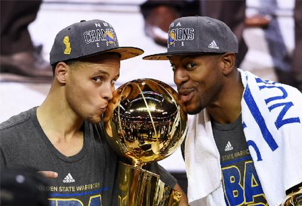
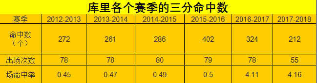
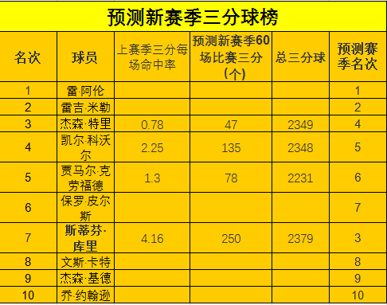

数读展望库里新赛季
2018-19新赛季即将开始，新赛季大家可能更加期待勇士队斯蒂芬-库里的表现吧，提到史蒂芬-库里，大家想到的就是他的无敌三分。出手快到无法封盖，射程覆盖整个半场，独有的运球颜射三分，这些就是nba球迷对库里的直观感受，那么新赛季库里的三分球的表现会是什么样呢？
纵观NBA历史的漫漫长河，有许许多多优秀的三分手，他们靠着一手精准的外线投射，一箭穿心，关键时刻雷阿伦作为96黄金一代的杰出代表，拥有出色的得分能力，他的急停跳投和突破能力都很强。作为到目前为止NBA历史第一的三分王，雷阿伦最出名的还要数他的三分球能力。雷阿伦以职业生涯常规赛投中2562个三分球总命中数，独霸NBA历史三分榜的第一位。
排名在第七位的是现役金州勇士队的史蒂芬·库里，截止到现在是库里NBA生涯的第9个赛季，目前库里生涯的三分命中数已经来到了2129记。排名NBA三分球历史榜第7位，现役第4位，排在库里前1位的是皮尔斯的2143记,目前已经退役。而独霸NBA历史三分榜的第一位的雷·阿伦单。在NBA 2005-06赛季的时候，雷·阿伦单赛季命中了269个三分球，打破了当时NBA的单赛季三分球命中数记录。
库里会否打破三分球历史榜记录？
排名在他之前的六名球员都打了1100场以上的比赛，而库里只打了625场比赛，而库里是这个榜单上排名前十球员中唯一一位出战场次在1000场以下的球员。而独霸NBA历史三分榜的第一位的雷·阿伦一共花了1300场比赛，库里则只花了625场比赛，他的三分进球数目非常夸张，单赛季三分命中数上库里包揽了前三，分别有402个、324个和286个，雷阿伦的生涯最多的一个赛季2005-06赛季的时候，雷·阿伦单赛季命中了269个三分球，打破了当时NBA的单赛季三分球命中数记录。如果库里能保持过去这三个赛季的成绩，那么三分球的历史榜很有可能被库里颠覆。
在近些年来，库里的三分速度呈几何倍增长，去年12月5日击败鹈鹕一战，库里的三分球便突破了2000大关，成为NBA历史上第八位投中2000个三分球的球员，同时也是达成这一里程碑速度最快的人，库里只用了597场比赛就达成了这一成就，比之前的纪录保持者雷-阿伦（824场）少用了227场。
库里本赛季一共命中了212个三分球，自从2012-13赛季开始，库里每个赛季都至少命中200个三分球，2015-16赛季，库里单季命中了402个三分，刷新了NBA单赛季三分命中纪录，比自己在2014-15赛季创造的三分纪录（286个）足足提升了116球，他和克莱-汤普森历史上仅有的两位六个赛季命中至少200个三分球的人，在他之前，雷-阿伦生涯有五个赛季至少命中200个三分。这也成为了NBA历史上最震撼的纪录之一。
“Logo男”杰里-韦斯特曾表示，库里开创了一种全新的打法。他没有借鉴任何模板，也无需和任何NBA名宿进行比较，库里的三分改变了传统篮球，开创了新的时代潮流，在三分领域，库里不断的刷新着纪录，历史三分王对于他而言也只是时间问题。
库里目前职业生涯已经打破了好多三分记录，单赛季命中402个三分排名历史第一，场均3.4个三分历史第一，生涯16次单场命中9个以上三分历史第一，生涯9次命中10个以上三分历史第一，单场命中13个三分历史第一，总决赛单场9个三分历史第一，单赛季季后赛98个三分，单轮系列赛命中32个三分全部是历史记录。
库里新赛季有望从第七冲到第三。
假设新赛季每名球员上场60次数，按照上个赛季的命中率，估算本赛季的命中数，库里250记三分（相加后总命中数2379），科沃尔将命中135记三分（相加后总命中数2348），克劳福德将命中78记三分（相加后总命中数2231），特里将命中约47记三分（相加后总命中数2329），那么库里仍然能以总数2379超过科沃尔的2348记三分排名历史第三位。
